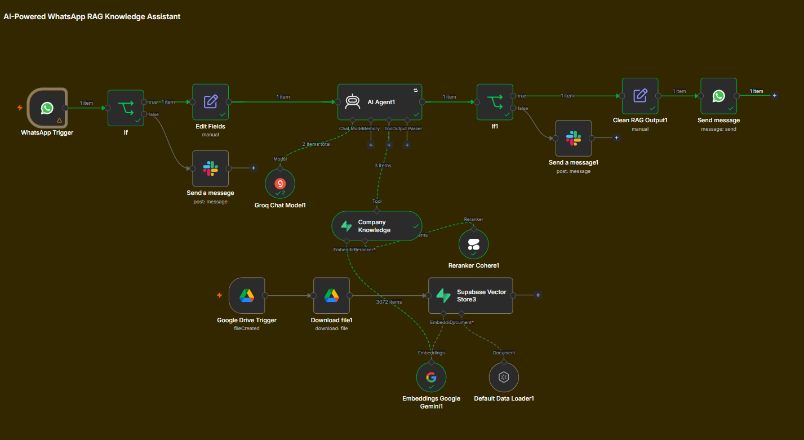

AI-Powered WhatsApp Knowledge Assistant
Give customers instant answers using your company’s own knowledge base.

The Problem
Customers often ask questions that require information from company documents,
FAQs, policies, service guides, or internal knowledge bases.
- Information is scattered across documents
- Employees repeatedly answer the same questions
- Customers have to wait for simple answers
- Generic AI cannot reliably use company-specific information
The challenge is not simply generating an answer — it is finding the
right information first.
Why This Matters
An AI assistant becomes much more useful when it can work with the
company’s own knowledge instead of relying only on its general training.
This system connects a WhatsApp conversation to a searchable company
knowledge base and retrieves relevant information before generating the response.
How The System Works
- Company documents are collected from Google Drive
- Documents are processed and divided into searchable chunks
- Chunks are converted into embeddings and stored in a Supabase vector database
- Metadata filters help narrow retrieval to the relevant knowledge category
- Relevant results are retrieved from the knowledge base
- A reranker improves the relevance of the retrieved information
- The AI Agent uses the retrieved knowledge to generate a concise answer
- The final response is delivered directly through WhatsApp
Retrieval-Augmented Generation
Instead of asking the AI to answer from general knowledge, the system
first searches the company knowledge base for relevant information.
The retrieved context is then provided to the AI Agent so the response
can be grounded in the available company information.
Use Cases
- Customer FAQ assistants
- Service and product information
- Company policy questions
- Internal employee knowledge assistants
- Support documentation
- WhatsApp-based knowledge access
Business Impact
- Faster access to company information
- Less repetitive question answering
- Consistent responses based on the knowledge base
- 24/7 access through WhatsApp
- Knowledge can be updated by updating the source documents
The result is a practical AI knowledge layer that connects a company’s
existing documents with a conversational interface.
Get The System →